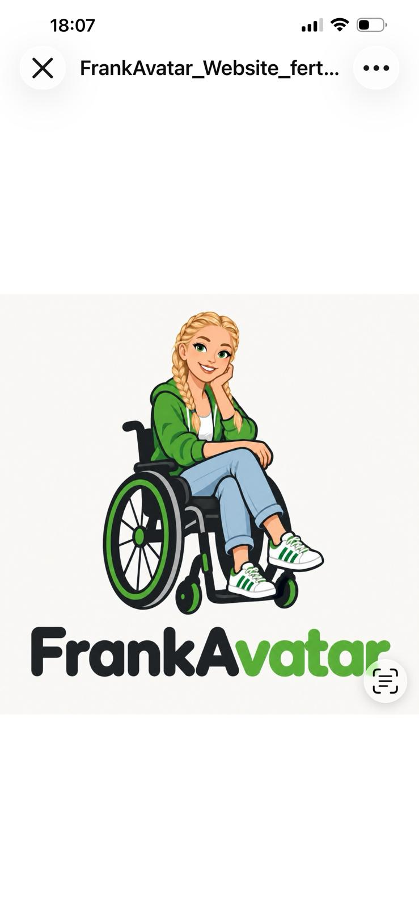

PERSÖNLICH. MIT HUMOR. SELBSTBESTIMMT.
Hallo,
ich bin Franka.
Schön, dass du da bist. Hier kannst du mich kennenlernen – meine Persönlichkeit, mein Leben, meine Interessen und die Idee hinter meinem FrankAvatar.

Schön, dass
du da bist!
du da bist!
MEINE WELT. MEINE STIMME.
Kommunikation · Persönlichkeit · SelbstbestimmungMeine Welt entdecken ↓
VIELE SEITEN. EIN MENSCH.
Entdecke meine Welt
01 / Persönlichkeit
Das bin ich ↗
Was mich ausmacht und wie ich wahrgenommen werden möchte.
02 / Mein WegMein Leben ↗
Mein Alltag, meine Entwicklung und Dinge, auf die ich stolz bin.
03 / ZukunftSchule & Zukunft ↗
Mein Schulalltag, Internat und meine Ideen für später.
04 / ZusammenFamilie & Freunde ↗
Menschen, die zu meinem Leben gehören.
05 / FreizeitWas ich mag ↗
Musik, Serien, Unternehmungen und Chillen.
06 / Meine StimmeSo kommuniziere ich ↗
Wie ich mich ausdrücke und wie der Avatar helfen soll.
07 / ErinnerungenMeine Geschichten ↗
Erlebnisse und Erinnerungen, die zu mir gehören.
08 / PerspektivenMenschen über mich ↗
Beobachtungen von Menschen, die mich gut kennen.